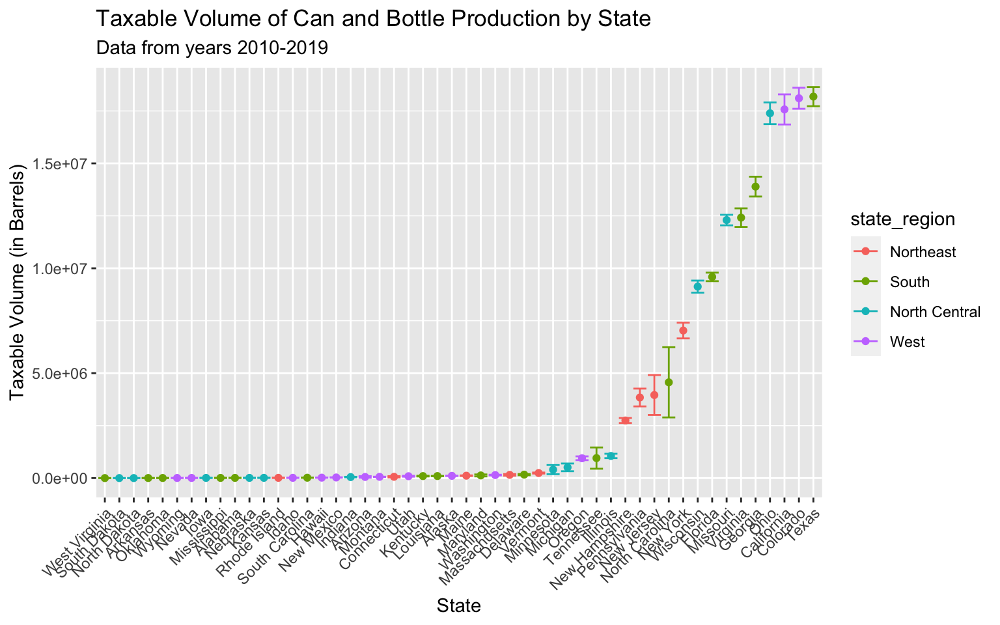

Production
This page concentrates on data collected from the Alcohol and Tobacco Tax and Trade Bureau and the American Beer Distributors. Its goal of this page is to explore how the production of barrels, can and bottles, and the shipment of the product differs between each state. please view the dashboard to get a better understanding of the production of barrels, and cans, and bottles over time, and a view of our data.
Production of Barrels
This graph looks at the number of Barrels of beer produced by state recorded in barrel units. The points represent the mean barrel production from 2010-2019 and the lines show corresponding confidence intervals The data comes from the Alcohol and Tobacco Tax and Trade Bureau data set. It helps us see the difference in barrel production of each state. The colors represent the state’s region and they will stay consistent through this webpage.
# tax_barrels_df %>%
# filter(state != "total") %>%
# pivot_longer(
# c(`2008`:`2019`),
# names_to = "year",
# values_to = "barrels"
# ) %>%
# filter(year > 2009) %>%
# mutate(text_label = str_c("state: ", state)) %>% # creating text label
# plot_ly( #using plotly to plot he tmax and tmin
# x = ~year, y = ~barrels, color = ~factor(state), text = ~text_label,
# alpha = .5, type = "scatter", mode = "lines", colors = "viridis") %>%
# layout( # adding a title
# title = "Barrel production over the years by state")
barrel = tax_barrels_df %>% # first we need to pivot the data
filter(state != "total") %>%
pivot_longer(
c(`2008`:`2019`),
names_to = "year",
values_to = "barrels"
)%>%
filter(year > 2009) %>% # we want to only focus on years 2010-2019
group_by(state) %>%
mutate(
barrels_log = barrels
) %>%
summarize(
mean_barrel = mean(barrels_log, na.rm = TRUE), # finding the mean barrels
CI_lower = mean(barrels_log, na.rm = TRUE) -
1.96 * sd(barrels_log, na.rm = TRUE)/sqrt(length(barrels_log)), # finding the lower CI
CI_upper = mean(barrels_log, na.rm = TRUE) +
1.96 * sd(barrels_log,na.rm = TRUE)/sqrt(length(barrels_log)) # finding the upper CI
) %>%
right_join(., region, by = "state") %>% # joining the regions in so we can color the graph
mutate(
state = abbr2state(state), # making the states into names instead of abbs
state = fct_reorder(state, mean_barrel) # ordering the states according to mean_barrels
)
barrel %>% # plotting!!
ggplot(aes(x = state, y = mean_barrel,color=state_region)) +
geom_point() +
geom_errorbar(aes(ymin = CI_lower, ymax = CI_upper)) +
theme(axis.text.x = element_text(angle = 45, hjust = 1)) +
#theme(legend.position = "none") +
labs(
title = "Average Barrel Production by State",
subtitle = "Data from years 2010-2019",
y = "Barrel Production (in Barrels)",
x = "State"
)Production of Barrels Analysis:
The state with the least amount of barrel production in North Dakota (1740.12) with South Dakota (2033.03) very close by. The state with the most barrel production in California (2.195186910^{6}) with Colorado (1.994354110^{6}) in second place. The trend in this graph appears to be exponential growth. The upper half of the states seem to produce a significant amount more barrels compare to the lower states. This cut off seem to be around Washington. There is a huge gap between Florida and Ohio. The states Ohio, Colorado, and California seem to make an exponential amount of barrels more than the other states.
Production of Cans and Bottles
This graph looks at the number of cans and bottles produced by the state recorded in barrel units. The points represent the mean bottle production from 2010-2019 and the lines represent the corresponding confidence intervals. The data comes from the Alcohol and Tobacco Tax and Trade Bureau data set. The colors represent the state’s region.
# tax_cans_df %>%
# filter(state != "total") %>%
# pivot_longer(
# c(`2008`:`2019`),
# names_to = "year",
# values_to = "cans_bottles"
# ) %>%
# filter(year > 2009) %>%
# mutate(text_label = str_c("state: ", state)) %>% # creating text label
# plot_ly( #using plotly to plot he tmax and tmin
# x = ~year, y = ~cans_bottles, color = ~factor(state), text = ~text_label,
# alpha = .5, type = "scatter", mode = "lines", colors = "viridis") %>%
# layout( # adding a title
# title = "Can and Bottleproduction over the years by state")
cans_bottles = tax_cans_df %>%
filter(state != "total") %>% #do not want total revenue
pivot_longer( # pivoting longer
c(`2008`:`2019`),
names_to = "year",
values_to = "cans_bottles" # looking at cans and bottles
) %>%
filter(year > 2009) %>% # only want years 2010-2019
group_by(state) %>%
summarize( # looking at the mean and confidence intervals
mean_barrel = mean(cans_bottles, na.rm = TRUE),
CI_lower = mean(cans_bottles, na.rm = TRUE) -
1.96 * sd(cans_bottles, na.rm = TRUE)/sqrt(length(cans_bottles)),
CI_upper = mean(cans_bottles, na.rm = TRUE) +
1.96 * sd(cans_bottles,na.rm = TRUE)/sqrt(length(cans_bottles))
) %>%
right_join(., region, by = "state") %>% # adding in the region
mutate(
state = abbr2state(state), # change abb to state names so it is easier to read
state = fct_reorder(state, mean_barrel) # ordering the states by mean barrel
)
cans_bottles %>%
ggplot(aes(x = state, y = mean_barrel, color=state_region)) +
geom_point() +
geom_errorbar(aes(ymin = CI_lower, ymax = CI_upper)) +
theme(axis.text.x = element_text(angle = 45, hjust = 1)) +
#theme(legend.position = "none") +
labs(
title = "Average Can and Bottle Production by State",
subtitle = "Data from years 2010-2019",
y = "Can and Bottle Production (in Barrels)",
x = "State"
)
Production of cans and bottles analysis:
The state with the lowest barrel production in West Virginia (99.66), South Dakota (765.98), and North Dakota (845.66). The state with the highest barrel production is Texas (1.818429710^{7}). In second place is Colorado and in third place is California (1.757271810^{7}). In fourth place in Ohio (1.738972110^{7}). These four states produce a massive amount of more than all the other states. Looking right around New Hampshire there all the states on the right side seem to be significantly higher than the states on the left side. It is really hard to tell if there is a difference in the states on the left side of New Hampshire. This is primarily because the 4 highest states increase our y-axis so that we can not see the variation in the states with a lower amount of bottle production.
Shipments of Malt Beverages
This is the number of shipments the United States has made of malt beverages in barrel units. The moving picture shows years from 2010 to 2019 and will continuously repeat. This data comes from the American Beer Distributors. The different colors represent the state regions in the united states.
# moving the rank so there isn't a gap where DC used to be
for(i in 1:length(state_df$state)) {
if(state_df$state[i] == "Wyoming") {state_df$rank_3[i] = 50}
}
region_name = tibble(state = state.name, state_region= state.region)
sm3 = state_df %>%
filter(state != "District of Columbia") %>%
filter(year > 2009) %>%
left_join(., region_name)
static_plot<-ggplot(sm3,aes(rank_3,group=state,fill=state_region,color=state_region)) +
geom_tile(aes(y = shipments/2,height = shipments, width = 0.9), alpha = 0.8, color = NA) +
geom_text(aes(y = 0, label = paste(state, ' ')), vjust = 0.2, hjust = 1, size = 3) +
geom_text(aes(y = shipments, label = paste(' ',shipments)), hjust=0, size = 3) +
coord_flip(clip = 'off', expand = TRUE) +
scale_y_continuous(labels = scales::comma) +
scale_x_reverse() +
guides(color = FALSE, fill = FALSE) +
theme_minimal() +
theme(
plot.title=element_text(size=20, hjust=0.5, face='bold', colour='grey', vjust=-1),
plot.subtitle=element_text(size=10, hjust=0.5, face='italic', color='grey'),
plot.caption =element_text(size=1, hjust=0.5, face='italic', color='grey'),
axis.ticks.y = element_blank(),
axis.text.y = element_blank(),
plot.margin = margin(1,1,1,4, 'cm')
)
plt<-static_plot + transition_states(states = year, transition_length = 4, state_length = 1) +
ease_aes('cubic-in-out') +
labs(title = 'Shipments in Year {closest_state}',
subtitle = 'Units is Barrels',
x = '',
y = 'Shipments of Malt Beverages')
plt
Shipments Analysis:
Wyoming consistently has the lowest amount of shipments and close behind it is Alaska. The state with the top amount shipment is California with Texas close behind it. These two state’s shipments seem to be way more compared to all the other states. This variable does not control the population base. Therefore, it makes sense why California and Texas have the highest shipment because they have the most people. The states at the very bottom of the list definitely have the lowest amount of populations base.
A work by Amy Pitts, Ruiyang Li, Wenbo Fei, and Ziyi (Iris) Wang
Visualizations and analyses performed using R (v4.0.2) and RStudio (v1.3.1073).
© Copyright 2020 The Beer Project Team, All Rights Reserved | Powered by Github.io